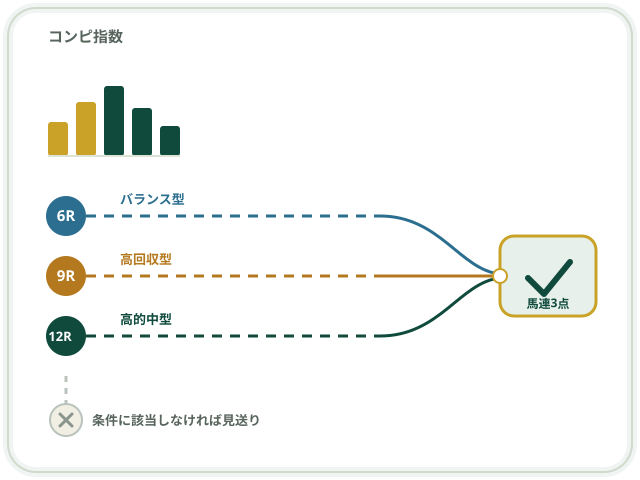
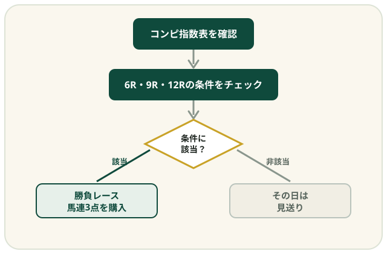

JRA中央競馬・馬連攻略法
感覚で買う馬券から、
条件で決める馬券へ。
「コンピ指数ゴールド馬券術」は、2024年1月1日〜2026年8月16日に開催されたJRA中央競馬・全9,112レースを検証して作られた馬連攻略法です。6R・9R・12Rという役割の異なる3つの条件に該当したレースだけを勝負対象にし、該当しなければその日は見送るというシンプルなルールで運用します。
商品の詳細を確認する※本ページはPRを含みます。馬券の購入は20歳以上の方に限られます。掲載の実績は過去の検証結果であり、将来の成果を保証するものではありません。

こんな馬券の買い方、心当たりはありませんか？
気になる馬が多くて、買い目がいつの間にか5点、8点と増えてしまう
レース直前まで買い目を迷い、結局そのときの勘で決めてしまう
負けを取り返そうとして、予定していなかったレースまで買ってしまう
毎週なんとなく全レースを眺めて、確信が持てないまま馬券を買っている
※上記は馬券を購入する方に一般的に見られる悩みの一例です（推定）。すべての方に当てはまるものではありません。
「コンピ指数ゴールド馬券術」ってどんな商品？
「コンピ指数ゴールド馬券術」は、JRA中央競馬のコンピ指数とレース条件の関係を検証して作られた馬連攻略法です。2024年1月1日から2026年8月16日までに開催された全9,112レースを対象に検証されています。
特徴は、6R・9R・12Rという役割の異なる3つのレースに条件を設定していること。条件に該当したレースだけを馬連3点で購入し、該当しなければその日は見送ります。専用ソフトや複雑な計算は不要で、コンピ指数表を見て条件を確認するだけで実践できる設計です。

こんな方に向いています
- 毎週の馬券で買い目が増えすぎてしまい、点数を絞る基準がほしい方（推定）
- 直感や勘だけに頼らず、条件を決めて馬券を買いたい方
- 複雑な計算や専用ソフトを使わずに実践できる方法を探している方
- 良い結果だけでなく、不的中も含めた全レースの実績を確認してから判断したい方
- JRA中央競馬の馬連を中心に楽しんでいる方（推定）
※「向いている方」は公式情報から一般的に読み取れる範囲の推定です。ご自身の馬券の楽しみ方によって適否は異なります。
役割の異なる3つの戦略
同じコンピ指数を使いながら、6R・9R・12Rそれぞれに求める役割が異なります。ひとつの買い方だけに頼らず、性格の違う3つの戦略を組み合わせます。
6R｜バランス型
的中と回収のバランスを狙う
191回の勝負機会のうち42回的中。的中率21.99％、回収率138.13％（検証期間の実績）。
9R｜高回収型
高配当で収支を押し上げる
156回の勝負機会のうち13回的中。的中率8.33％、回収率164.62％。的中回数より高配当を重視する役割です（検証期間の実績）。
12R｜高的中型
無料公開済みの高的中戦略
189回の勝負機会のうち76回的中。的中率40.21％、回収率124.83％（検証期間の実績）。
536勝負／131的中
3戦略を合計した検証期間中の勝負・的中回数
回収率141.15％
馬券購入総額1,608,000円→払戻総額2,269,700円（検証結果）
利益 ＋661,700円
各戦略を馬連3点・1点1,000円で購入した場合の検証上の収支
| 年 | 勝負 | 的中 | 利益 | 回収率 |
|---|---|---|---|---|
| 2024年 | 194 | 50 | ＋207,400円 | 135.64％ |
| 2025年 | 218 | 48 | ＋278,100円 | 142.52％ |
| 2026年（8/16まで） | 124 | 33 | ＋176,200円 | 147.37％ |
※上記はすべて2024年1月1日〜2026年8月16日、JRA中央競馬・全9,112レースを対象にした検証結果（各戦略を馬連3点・1点1,000円で購入した場合）です。過去の実績であり、将来の的中率・回収率・利益を保証するものではありません。

実践の流れ
- 1
コンピ指数表を確認する
開催日のコンピ指数表を用意します。専用ソフトは必要ありません。
- 2
6R・9R・12Rの条件をチェックする
本編PDFで公開されている判定条件に、その日のレースが該当するか確認します。
- 3
該当すれば勝負、しなければ見送る
条件に該当したレースだけが勝負対象です。該当しなければ、その日は無理に買いません。
- 4
指定された馬連3点を購入する
該当したレースは、決められた馬連3点で購入します。
お渡しするもの
1
本編PDF（11ページ）
6R【バランス型】・9R【高回収型】・12R【高的中型】の具体的な判定条件と馬連3点を公開しています。
2
全レース実績Excel（6シート）
2024年1月1日から2026年8月16日までの対象全レースを収録。的中したレースだけでなく、不的中のレースも確認できます。実践チェック表も同ファイル内に収録されています。
購入者限定の4大特典
特典1
実戦運用ガイド
開催日の使い方、勝負レースがない場合・複数出た場合の考え方、購入金額の考え方までを整理したガイドです。
特典2
資金配分・馬券資金管理シート
購入額、払戻、収支、累計収支、回収率を管理しやすい形にまとめたシートです。
特典3
クイック判定シート
3戦略の判定条件と馬連3点を1枚に集約。開催日にすぐ確認できます。
特典4
プロフェッショナル版 優先案内権
より多くの戦略・機能を求める方向けに、上位版「コンピ指数ゴールド馬券術プロフェッショナル版」を優先案内。購入は任意で、今回の商品だけでも3戦略が完結しています。
価格
商品ファイルはダウンロード形式で提供されます。購入手続きはインフォトップの決済ページで行います。
コンピ指数ゴールド馬券術
9,800円（税込・追加料金なし）
本編PDF・全レース実績Excel・購入者限定4大特典を含みます。購入後、インフォトップのマイページからダウンロードします。
商品の詳細・購入手続きへ※価格は2026年9月時点で公式ページに掲載されていた情報です。変更される場合があるため、お申し込み前に必ず公式ページでご確認ください。
申し込み前に確認しておきたいこと
- 馬券（勝馬投票券）の購入は20歳以上の方に限られます。
- 掲載している的中率・回収率・利益は2024年1月1日〜2026年8月16日の検証期間における過去の実績であり、将来の成果を保証するものではありません。
- 競馬に必ず勝てる方法はありません。馬券の購入はご自身の判断と責任のもと、無理のない範囲で行ってください。
- 上位版「プロフェッショナル版」の購入は任意です。今回の商品だけで6R・9R・12Rの3戦略を実践できます。
- 商品はダウンロード形式のPDF・Excelファイルです。購入後、インフォトップのマイページからダウンロードします。
収益・回収率・的中を保証するものではありません。実際の内容・価格は公式ページで必ずご確認ください。
よくある質問
はい。基本的な馬券の購入方法とコンピ指数表の見方が分かれば実践できます。複雑な計算式を作ったり、競走馬1頭1頭を詳しく分析したりする必要はありません。
必要ありません。コンピ指数表だけで実践できます。
いいえ。条件に該当しなければ見送ります。無理に馬券を買う方法ではありません。
基本は馬連3点です。具体的な判定条件と買い目は本編PDFで公開されています。
はい。2024年1月1日から2026年8月16日までの対象全レース実績をまとめたExcelが提供されます。的中したレースだけでなく、不的中だったレースも収録されています。
いいえ。本編PDF、全レース実績Excel、4大特典が今回の価格に含まれています。
いいえ。今回の「コンピ指数ゴールド馬券術」だけで、6R・9R・12Rの3戦略を実践できる商品として完結しています。プロフェッショナル版は任意のご案内です。
いいえ。競馬に必ず勝てる方法はありません。掲載している数値は2024年1月1日から2026年8月16日までの過去データを検証した結果であり、将来も同じ的中率・回収率・利益になることを保証するものではありません。
条件に基づいた馬券選びを、始めてみませんか。
感覚や勘に頼るのではなく、検証済みの条件に沿って勝負レースを絞り込む。まずは商品の詳細をご確認ください。
商品の詳細・購入手続きへ進む※本リンクはPR（アフィリエイト）リンクです。馬券の購入は20歳以上の方に限られ、成果を保証するものではありません。